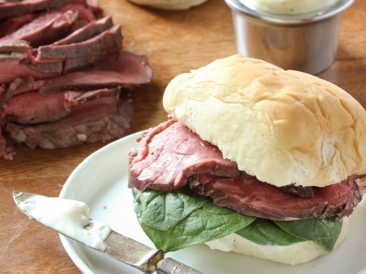

Beef Tenderloin recipe

A perfectly cooked beef tenderloin is truly a sight to behold.
The delectable cut often made special-occasion appearances when I was growing up,
but Easter Sunday and its rosy-hued tenderloin tea sandwiches was always a holiday favorite.
After early church and egg hunts in our finest spring whites, my family would race home to enjoy my mother's fabulous Southern spread.
All of our favorite mainstays were there — think buttery deviled eggs and pickled Sea Island shrimp — but her signature beef
tenderloin sliders were the ultimate pièce de résistance.
Ingedients
For the beef tenderloin:
- 1 (2 1/2 to 3 pound) beef tenderloin, preferably the center cut
- 2 to 3 teaspoons kosher salt
- 1 to 2 teaspoons freshly ground black pepper
- 3 tablespoons unsalted butter, melted
For the horseradish sauce:
- 1/2 cup mayonnaise, store-bought or homemade
- 1 tablespoon prepared horseradish, or to taste
- 2 tablespoons whole or 2% milk
- Freshly ground black pepper
For the sliders:
- Dinner rolls, such as Parker House
- Baby spinach or arugula
- Whole grain mustard
Steps
- Remove 1 (2 1/2 to 3 pound) beef tenderloin from the refrigerator at least one hour before cooking.
Trim any fat and silver skin from the beef and discard.
- Preheat the oven to 475°F. Tie the roast in 1 1/2-inch intervals if necessary and place in a large roasting pan.
Season with 2 to 3 teaspoons kosher salt and 1 to 2 teaspoons freshly ground black pepper.
Cook the beef for 15 minutes. Pour the butter over the beef and continue roasting until it reaches an internal
temperature of 130°F for medium rare, 25 to 30 minutes. (The temperature will rise 5 to 10 degrees while resting.)
- Allow the meat to cool to room temperature, then wrap in foil and refrigerate for 8 hours or overnight.
Cut into very thin slices for sliders.
- For the horseradish sauce, combine 1/2 cup mayonnaise, 1 tablespoon prepared horseradish, and 2 tablespoons whole
or 2% milk until desired consistency is reached. Season with more black pepper if desired.
- Serve sliced beef with dinner rolls, baby spinach or arugula, and horseradish sauce.
Home page